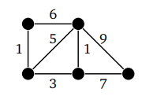
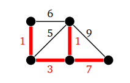
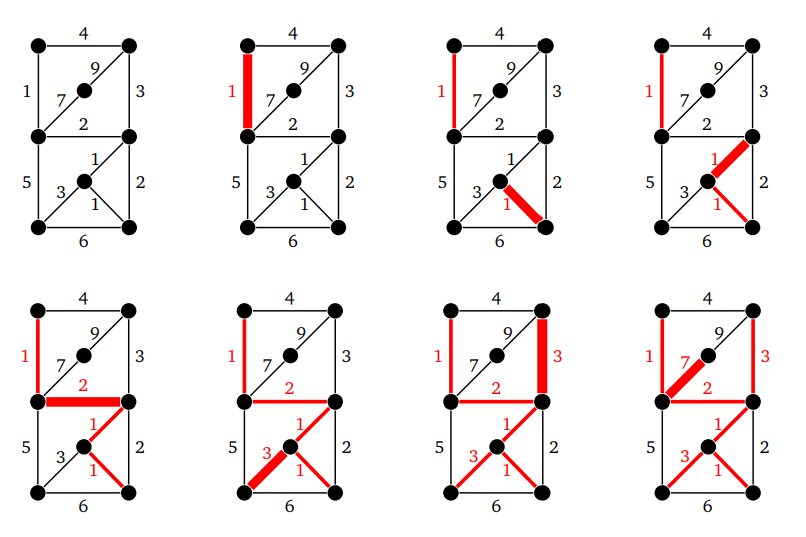

Взвешенный граф — это граф, в котором каждое ребро обозначается числом. Это число — его вес:

рис.17
Вес — это стоимость использования данного ребра. Например, приведенный выше граф может представлять дорожную сеть, где вершины — это города, ребра — дороги между ними, а вес — стоимость строительства этих дорог.
Предположим, что мы хотим построить дороги, чтобы добраться из одного города в другой. Нам нужно сделать это как можно дешевле. Так может выглядеть ответ:

рис.18
В этом случае нам не нужны циклы, так как мы пытаемся сделать все как можно дешевле. Мы хотим добираться до любой вершины графа, поэтому нам нужно минимальное охватывающее дерево, в котором сумма весов всех ребер в дереве как можно меньше.
Существует несколько алгоритмов, чтобы найти минимальные прямые деревья. В этом уроке мы рассмотрим алгоритм Крускала.
Что такое алгоритм Крускала
Алгоритм Крускала строит охватывающее дерево графа G по одному ребру за раз. На каждом шаге алгоритма мы берем ребро G с таким весом, чтобы добавление этого ребра в строящееся дерево не создавало цикла.
Мы можем разрывать связи между весом ребер как угодно, или добавлять ребра до тех пор, пока это не станет невозможным. В графе с n вершинами нам всегда потребуется добавить ровно n-1 ребро.
Так это выглядит (грани выделены в порядке их добавления):

рис.19
С помощью алгоритма Крускала на каждом шаге выбирается самое дешевое доступное ребро. В этом случае не нужно задумываться о будущих последствиях этого выбора. Эта стратегия всегда дает минимальное остовное дерево.